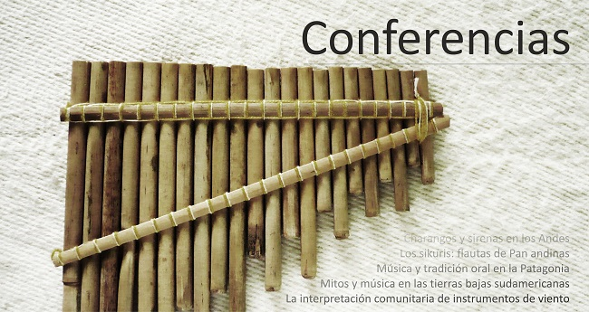
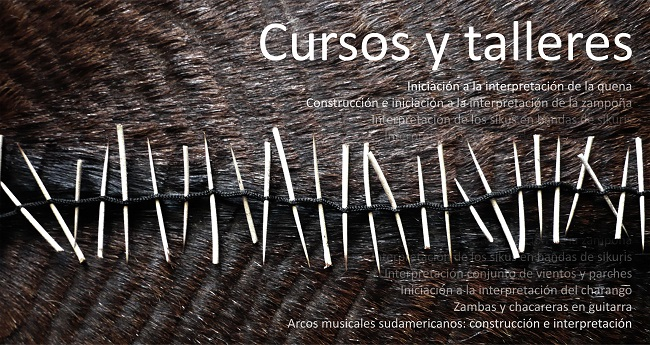

Teaching activities
Home > Teaching activities
The activities carried out within the framework of the Instrumentarium project have a disseminative and educational nature, and are grouped under the title Sonidos de una tierra sin tiempo ("Sounds of a Timeless Land").

As a set of educational and disseminative activities, Sonidos de una tierra sin tiempo proposes the recovery and organization of Latin American musical knowledge and memory based on documents from libraries, archives, museums, and oral communities, and the creation of spaces and events where all that information is transmitted through the interpretation of a selection of musical instruments, traditional or not, and the presentation of texts and other materials.
Sonidos de una tierra sin tiempo includes educational concerts and exhibitions, conferences, courses, workshops, and seminars, both on musical instruments, the musical culture they encode, and the environment that surrounds them, as well as on oral and sound tradition and its management. All activities are aimed at different types of audiences, with different durations and structures.

Educational Concerts and Exhibitions
Educational concerts and exhibitions cover a wide range of topics related to traditional musical instruments from around the world: from the presentation of instrument families (aerophones, chordophones, membranophones) to descriptions by geographical regions/countries, ethnic groups, musical genres, or historical periods. All concerts include the exhibition and demonstration of instruments, fragments of oral tradition, and content based on solid academic sources and the author's research.
Examples (based on South America): Indigenous instruments from the highlands/lowlands of South America | Mestizo/Creole instruments from South America | Andean instruments | Traditional wind/string/percussion instruments from South America | South American panpipes/recorders/whistles | South American transverse/globular flutes | South American natural trumpets | South American clarinets | South American musical bows/chordophones | South American percussion instruments | The sounds of the Gran Chaco/Patagonia/Orinoco | Instruments and musical traditions of the Quechua/Aymara/Mapuche.

Conferences
Conferences are theoretical events similar in topics to educational concerts, although they substitute the exhibition and demonstration of instruments with the use of relevant audiovisual and multimedia supports.
Examples (based on South America): Musical instruments (charangos and sirens, sikuri bands...) | Rhythms and musical styles (Colombian chirimía, Gaucho music...) | Traditional music (from the Guaraní, from the Sierra Nevada...) | Oral tradition and sound culture (in Patagonia, in the Andes...) | Dances and clothing (in the central Peruvian highlands, on the Argentine coast...) | Festivals and ceremonies (in the lowlands, in Titicaca...) | Customs, myths, and legends (Afro-Bolivians, in the lower Amazon...).

Courses and Workshops
Courses and workshops are predominantly practical activities, covering the construction (only in some cases) and interpretation of traditional musical instruments from around the world. They focus especially on aerophones and idiophones, and community musical groups, although they also address many other styles and instruments.
Examples (based on South America): Construction of simple instruments (sikus, quenas, bows) | Interpretation of solo instruments (quena, pinkillo, zampoña, rondador, tarka, mohoseño, bombo legüero, charango...) | Interpretation in traditional groups (sikuris, vertical flute troops, Argentine folk quartet, Colombian flutes...) | Interpretation of rhythms and styles (by regions, countries, ethnic groups, festivities...).

Seminars
Seminars are similar to courses and workshops but are predominantly theoretical and specialized in content.
Examples: Musical instruments (by family, by region, by people) | Rhythms and musical styles (by country, by region, by people) | Traditional music (by country, by region, by people) | Oral tradition and sound culture | Dances (choreographies, styles) and clothing (by region) | Festivals, ceremonies, and festivals (by period, by people) | Customs, myths, and legends (by region, by people) | Collection of oral tradition (methodology and practice) | Management of oral and sound tradition (methodology and practice) | Methodology of musicological research | Field organology (methodology and practice).
Contacto
Organizations and institutions interested in Sonidos de una tierra sin tiempo can contact me for more information, inquire about the possibility of conducting activities not included here, and establish schedules and conditions.